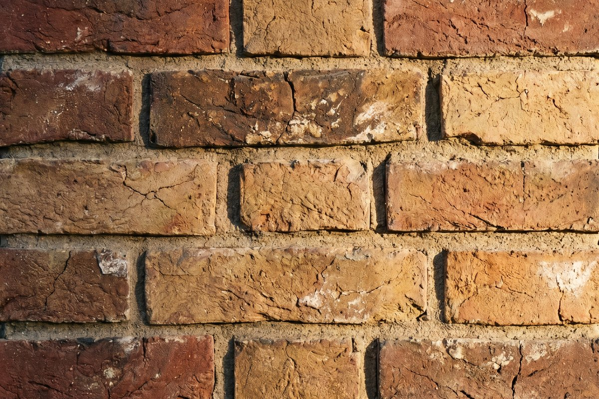

01 / Facing

Facing brick · The face of the build
Clay Facing Brick
Extruded (wire-cut) & handmade
The everyday hero: a hard-fired clay brick for external walls and feature elevations. Wire-cut faces give a crisp, uniform line; handmade faces give a soft, textured, slightly irregular character for a more traditional look. Natural colour spreads from deep red and rust through terracotta to warm sand, blended to your chosen mix.
- Origin
- Iran — kiln-fired
- Type
- Solid / perforated clay
- Face
- Wire-cut · Handmade
- Formats
- Standard · Roman · Long
- Frost
- Frost-resistant
- Colour
- Red · terracotta · sand
Where it works
FacadesBoundary wallsFeature elevationsMasonry